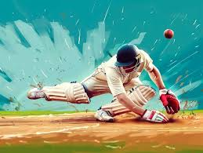
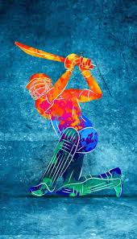
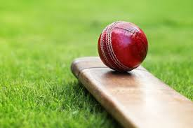

CRICKET
Cricket is a bat-and-ball game played between two teams of eleven players on a field, at the centre of which is
a
22-yard (20-metre; 66-foot) pitch with a wicket at each end, each comprising two bails (small sticks) balanced
on
three stumps. Two players from the batting team, the striker and nonstriker, stand in front of either wicket
holding
bats, while one player from the fielding team, the bowler, bowls the ball toward the striker's wicket from the
opposite end of the pitch. The striker's goal is to hit the bowled ball with the bat and then switch places with
the
nonstriker, with the batting team scoring one run for each of these exchanges. Runs are also scored when the
ball
reaches the boundary of the field or when the ball is bowled illegally.
The fielding team aims to prevent runs by dismissing batters (so they are "out"). Dismissal can occur in various
ways, including being bowled (when the ball hits the striker's wicket and dislodges the bails), and by the
fielding
side either catching the ball after it is hit by the bat but before it hits the ground, or hitting a wicket with
the
ball before a batter can cross the crease line in front of the wicket. When ten batters have been dismissed, the
innings (playing phase) ends and the teams swap roles. Forms of cricket range from traditional Test matches
played
over five days to the newer Twenty20 format (also known as T20), in which each team bats for a single innings of
20
overs (each "over" being a set of 6 fair opportunities for the batting team to score) and the game generally
lasts
three to four hours.



| SR |
Player Name |
Total Runs |
| 1 |
Ram |
17000 |
| 2 |
Laxman |
16000 |
| 3 |
Shyam |
15000 |
| 4 |
Bharat |
13000 |
© Royal Technosoft